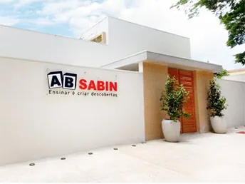

Escolas
Colégio AB Sabin
Uma escola com a mesma filosofia do Colégio Albert Sabin, especialmente projetada e construída para a Educação Infantil. Assim é o AB Sabin, que oferece uma educação de qualidade desde os… Ler mais
Uma escola com a mesma filosofia do Colégio Albert Sabin, especialmente projetada e construída para a Educação Infantil. Assim é o AB Sabin, que oferece uma educação de qualidade desde os primeiros anos de vida do aluno. Para a nossa equipe, Educação Infantil não é apenas brincar na escola. É aproveitar as primeiras descobertas da criança como base para a formação da autonomia, do respeito e da ética. Aqui, ensinar é criar descobertas. O trabalho realiza-se em três campos de atividade: pesquisas , que ampliam os horizontes e as percepções de mundo; histórias , que desenvolvem as capacidades de ouvir, interpretar, imaginar e narrar; e jogos , que atuam sobre o raciocínio lógico e a capacidade de trabalhar em equipe. O AB Sabin dispõe de 9 salas de aula para turmas do Maternal, Jardim e Pré, brinquedoteca, sala de leitura, sala de artes, cozinha experimental, minibosque, piscina aquecida e quadra poliesportiva, todos os ambientes adequados às faixas etárias dos alunos. Entre em contato e venha nos fazer uma visita. Será um prazer recebê-lo.
- Endereço
- Av. Martin Luther, King, 2266 / 2280, Vila São Francisco - São Paulo/SP
- Horário
- Manhã: 8h às 12h / Tarde: 13h às 17h / Integral: 8h às 17h
- Telefones
- (11) 3766-4774